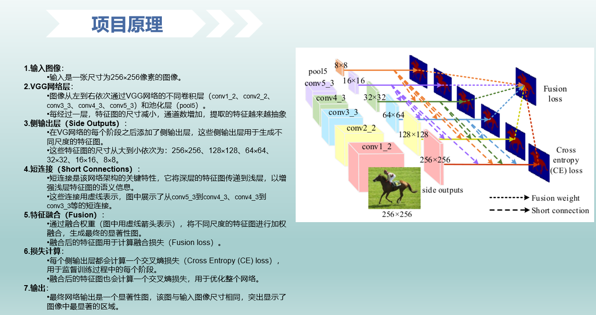
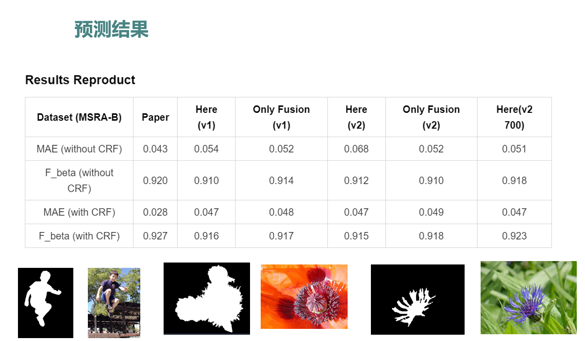
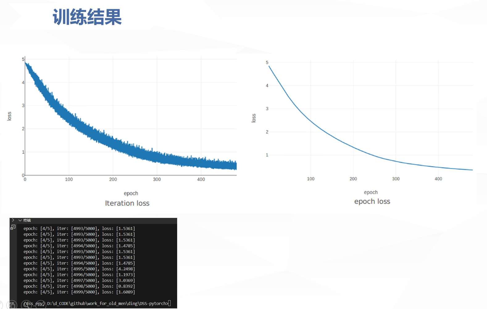
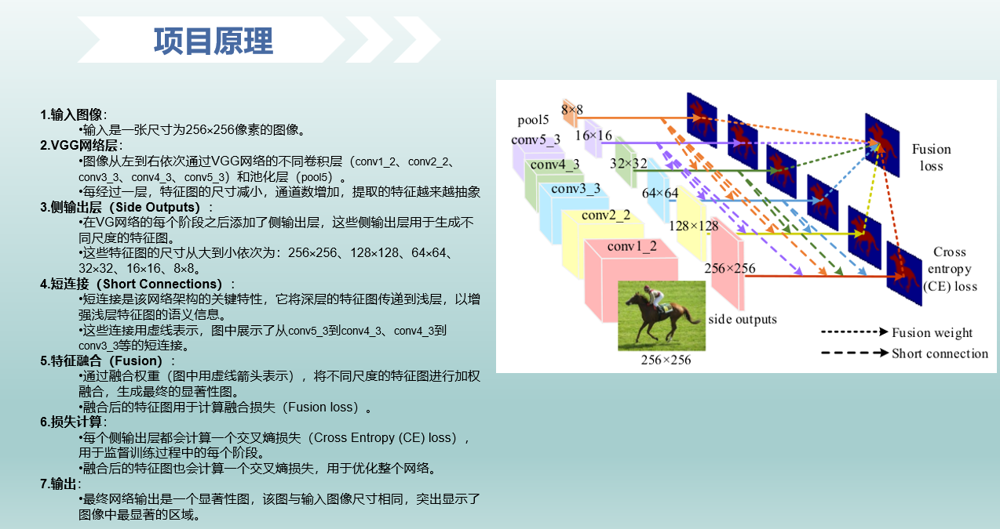
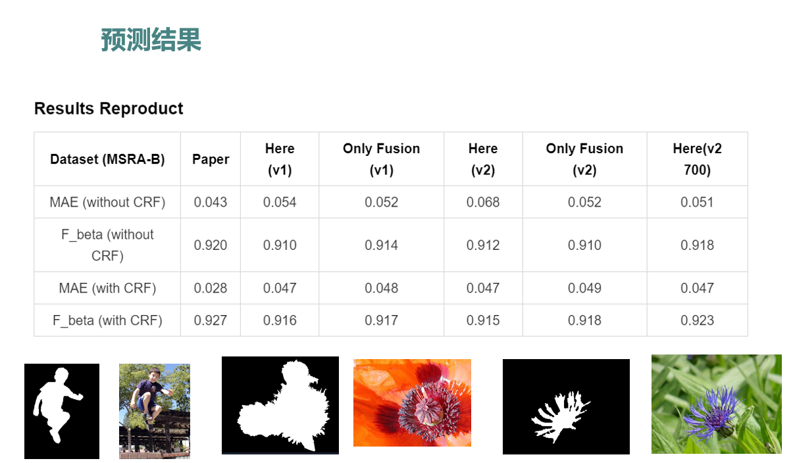
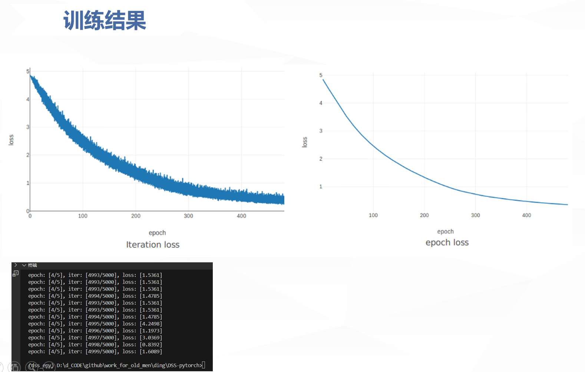

基于PyTorch实现的显著性目标检测模型DSS(Deeply Supervised Salient Object Detection with Short Connection)，论文地址：arXiv链接
 





DSS-pytorch/
├── dataset.py # 数据加载和处理
| # 两种加载方式，从文件列表加载、直接从目录加载
| # 使用 MSRA-B
| # Resize到指定尺寸
| # '归一化'(mean=[0.485,0.456,0.406], std=[0.229,0.224,0.225])
| # 标签转换为二值图
|
├── dssnet.py # DSS网络核心实现，包含以下关键组件：
| # 1. Backbone网络: 基于VGG16修改的特征提取主干
| # - 5个卷积块，每个块后接最大池化
| # - 输出不同层次的特征图
| # 2. FeatLayer侧边输出层:
| # - 生成6个不同尺度的侧边输出
| # - 每个输出对应不同感受野
| # 3. ConcatLayer特征连接层:
| # - 处理不同层特征图的连接
| # - 使用转置卷积进行上采样
| # 4. FusionLayer特征融合层:
| # - 支持两种侧边输出的特征图融合方式(v1:平均融合, v2:可学习权重融合)
| # - 最终生成显著性预测图
| # 网络核心特点:
| # - 深度监督: 6个侧边输出+1个融合输出
| # - 短连接: 跨层特征连接增强信息流动
| # - 多尺度: 捕捉不同大小的显著目标
|
├── loss.py # 损失函数实现，使用二元交叉熵(BCE)计算7个概率图的损失(6个尺度+1个融合图)，支持对不同输出赋予不同权重
|
├── main.py # 主训练/测试脚本，主要功能：
| # 1. 训练模式：
| # - 加载训练数据和验证数据
| # - 初始化Solver进行模型训练
| # - 自动创建运行目录保存结果
| # 2. 测试模式：
| # - 加载测试数据
| # - 初始化Solver进行模型测试
| # - 支持CRF后处理选项
| # 3. 参数配置：
| # - 超参数设置(学习率、batch大小等)
| # - 数据路径配置
| # - 训练/测试模式切换
|
├── solver.py # 训练逻辑和评估指标；
| # 优化器：Adam,具有自适应学习率调整的特点，适用于深度学习模型的训练；
| # 评估指标：MAE(平均绝对误差)，F_beta分数；
| # 训练阶段：支持CRF后处理，包含训练、验证和测试三个阶段；
| # 关键参数： `select`: 选择哪些侧边输出用于评估([1,2,3,6])
| # 训练优化：使用梯度裁剪(clip_grad_norm_)，防止梯度爆炸
|
├── README.md # 项目说明文档
├── demo.ipynb # 演示notebook
├── weights/ # 预训练权重(vgg16_feat.pth)
├── results/ # 训练结果和模型保存
├── png/ # 示例图片
└── tools/ # 工具脚本输入：来自VGG不同层级的特征图，为后续显著性预测提供基础特征。
结构：3层卷积(Conv- ReLU- Conv- ReLU- Conv)，逐层提取特征，增强特征表达力。
作用：生成不同尺度的显著性预测图，捕捉目标在不同尺度下的显著性特征。
设计考量：保持感受野与输入特征图匹配，确保特征图的空间信息完整。
核心功能：特征图融合与上采样，将不同尺度的特征图进行融合，增强特征的表达能力。
关键技术点：
数学表达：Z=h(∑f_m R^(m))，其中f_m表示不同尺度的特征图，R^(m)表示权重，h表示非线性激活函数。
参考项目README.md中的说明：
python main.py --mode='train' ...python main.py --mode='test' ...